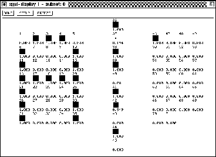
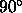
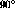
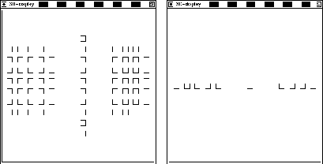
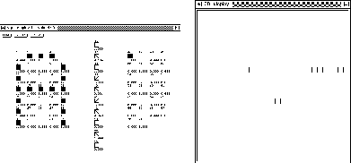

The following example is to demonstrate the rearranging of a normal 2D network for three dimensional display. As example network, the letter classifier LETTERS.NET is used.
In the 2D-display, the network looks like in figure  :
:
One scales the net with scale  in the transformation
panel, then it looks like figure
in the transformation
panel, then it looks like figure  (left). After a
rotation with rotate
(left). After a
rotation with rotate

by around the
x-axis the network looks like figure
around the
x-axis the network looks like figure

Figure: Scaled network (left) and network rotated by

(right)
Now the middle layer is selected in the 2D-display
(figure  , left).
, left).

To assign the z-coordinate to the layer, the z-value entry in
the 3D-control panel is set to three. Then one moves the mouse into
the 2D-display and enters the key sequence "` U 3 Z"'. This is
shown in figure  (right).
(right).

Now the reference unit must be selected (figure  , left).
, left).
To move the units over the zero plane, the mouse is moved in the XGUI
display to the position x=3, y=0 and the keys "` U 3 M"' are
pressed. The result is displayed in figure  (right).
(right).

The output layer, which is assigned the z-value 6, is treated
accordingly. Now the network may be rotated to any position
(figure  , left).
, left).
Finally the central projection and the illumination may be turned
on (figure  , right).
, right).
These are the links in the wire-frame model
(figure  , left).The network with links in the
solid model looks like figure
, left).The network with links in the
solid model looks like figure  (right).
(right).
Figure: Network with links in the wireframe model (left) and in the solid
model (right)